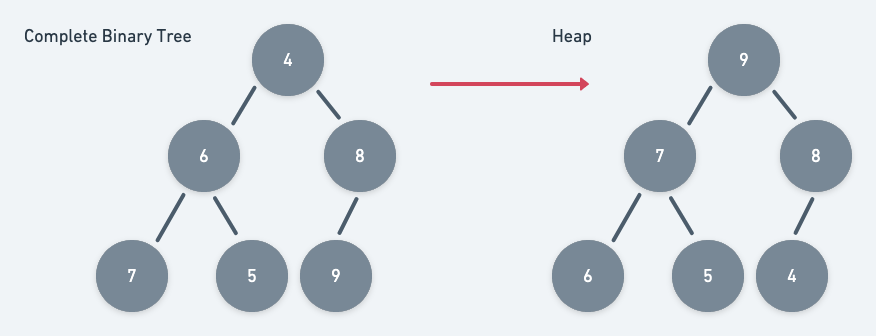
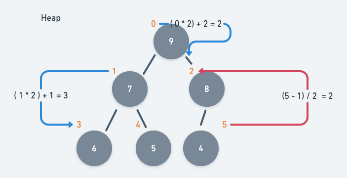

힙 정렬
완전 이진트리에서 파생된 heap 특성을 사용하여 정렬하는 알고리즘, 힙은 부모의 값이 자식의 값보다 항상 크거나 항상 작다라는 조건을 만족하는 완전이진트리 형태의 자료구조이다.
완전이진트리는 자식 노드를 왼쪽부터 채워나가는 형태의 자료구조이다.

힙의 개념
완전이진트리와의 차이점은 큰 값이 상위, 작은 값이 하위에 위치한 트리형 자료구조로써 부모-자식 관계가 일정해야한다. 작은 값이 부모가 되는 힙 형태를 min-heap(최소 힙), 큰 값이 부모가 되는 트리 구조를 max-heap(최대 힙)이라고 한다.

힙은 다음과 같은 관계를 가지고 있어야한다.
- 부모 → a[ ( i - 1) / 2]
- 왼쪽 자식 → a[i * 2 + 1]
- 오른쪽 자식 → a[ i * 2 + 2]
동작 과정
힙의 특성을 이용해 정렬을 구현하는 방법은 다음과 같다.
-
배열을 이등분하여 좌측 요소부터 1씩 감소시키면서 heap 형태로 변환한다.
for (let i = Math.floor(tempArray.length / 2) - 1; i >= 0; i--) { heap(tempArray, length, i); } -
(1)의 과정을 수행하면, 이등분의
left부분은 heap 상태가 되어지면서 정렬 상태가 되어있을 것이다. 배열의 첫번째 요소(가장 큰 값)와 정렬되지 않은 우측 요소부터 heap 형태로 변환하는 과정을 반복한다.for (let i = tempArray.length - 1; i > 0; i--) { swap(tempArray, 0, i); //가장 큰 요소와 정렬되지 않은 마지막 요소와 교환 length--; heap(tempArray, length, 0); //배열의 나머지 부분들을 heap상태로 만들며 정렬 과정 수행 } -
heap 형태로 변환하는 소스는 다음과 같다. 이진 트리 형태로 배열을 받으면서,
root요소를 자식 요소의 값에 따라 계속 바꾸어주는 방식이다./** * heapify 메서드 * @param {array} heapArray : heap으로 변환 할 배열 * @param {number} length : 배열 길이 * @param {number} parent : 부모 인덱스 */ function heap(heapArray, length, parent) { const left = parent * 2 + 1; const right = left + 1; let root = parent; //좌측 요소가 부모 값 보다 크면 부모 인덱스를 left 인덱스로 대입 if (left < length && heapArray[left] > heapArray[root]) { root = left; } //우측 요소가 부모 값 보다 크면 부모 인덱스를 right 인덱스로 대입 if (right < length && heapArray[right] > heapArray[root]) { root = right; } //부모 요소가 자식 요소와 바꾸어 졌으면 swap처리 및 heap 재검사 if (root !== parent) { swap(heapArray, parent, root); heap(heapArray, length, root); } }
자바스크립트로 구현한 HeapSort
function heapSort(array) {
/**
* 요소 swap 메서드
* @param {array} swapArray : swap 대상 배열
* @param {number} a : 교체 대상 인덱스
* @param {number} b : 교체 인덱스
*/
function swap(swapArray, a, b) {
const temp = swapArray[a];
swapArray[a] = swapArray[b];
swapArray[b] = temp;
}
/**
* heapify 메서드
* @param {array} heapArray : heap으로 변환 할 배열
* @param {number} length : 배열 길이
* @param {number} parent : 부모 인덱스
*/
function heap(heapArray, length, parent) {
const left = parent * 2 + 1;
const right = left + 1;
let root = parent;
//좌측 요소가 부모 값 보다 크면 부모 인덱스를 left 인덱스로 대입
if (left < length && heapArray[left] > heapArray[root]) {
root = left;
}
//우측 요소가 부모 값 보다 크면 부모 인덱스를 right 인덱스로 대입
if (right < length && heapArray[right] > heapArray[root]) {
root = right;
}
//부모 요소가 자식 요소와 바꾸어 졌으면 swap처리 및 heap 재검사
if (root !== parent) {
swap(heapArray, parent, root);
heap(heapArray, length, root);
}
}
/**
* 정렬 메서드
* @param {array} tempArray : 정렬 대상 배열
* @returns
*/
function sort(tempArray) {
let length = tempArray.length;
if (length === 1) {
return tempArray;
} else {
//배열을 이등분하여 좌측 요소들을 heap 형태로 변환
for (let i = Math.floor(tempArray.length / 2) - 1; i >= 0; i--) {
heap(tempArray, length, i);
}
for (let i = tempArray.length - 1; i > 0; i--) {
swap(tempArray, 0, i); //가장 큰 요소와 정렬되지 않은 마지막 요소와 교환
length--;
heap(tempArray, length, 0); //배열의 나머지 부분들을 heap상태로 만들며 정렬 과정 수행
}
return tempArray;
}
}
return sort(array);
}
const unsorted = [5, 1, 3, 4, 2, 9, 7, 8];
console.log(heapSort(unsorted)); //[1, 2 ,3 ,4 ,5]
참고자료
- 자료구조와 함께 배우는 알고리즘 입문 - 검색 알고리즘 (Bohyoh Shibata 저)
- Heap Sort Solution In JavaScript (in-depth) - By. Mono Li